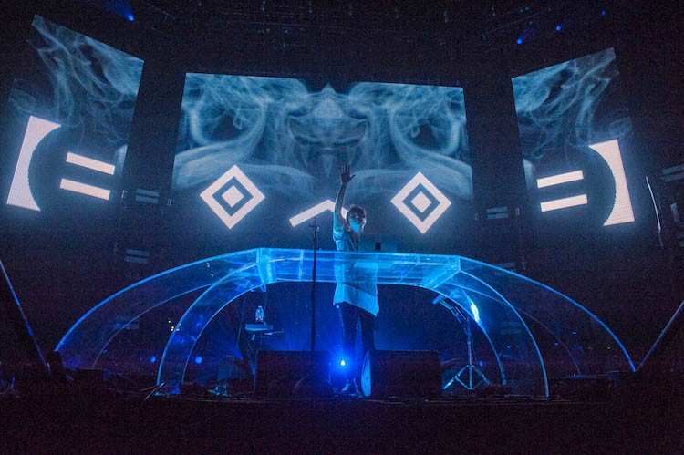

ABOUT
Porter Robinson (born July 15, 1992) is an American DJ, Grammy-nominated record producer and musician from Chapel Hill, North Carolina. His debut full-length studio album, Worlds, was released in 2014 and peaked at #1 on Billboard’s Top Dance/Electronic Albums. During Robinson's "Language Tour", he continually began to grow tired of the current dance music scene, centered around formulaic songs with timed builds and beat drops, designed to excite people at festivals and clubs. Robinson stated, “The more I forced myself to work within those DJ-friendly limits, the more I resented the genre.” He then spent the next year or so working on a new album and live show, of which he stated, "...when I do change the style of my show into the live thing I'm going to do later this year, I want the shift in focus to be clear."
Porter's debut studio album Worlds was released through Astralwerks and Virgin EMI on August 12, 2014. The album focused more on melodies to invoke a sense of nostalgia, juxtaposing the percussive bass driven tracks he had released previously. Robinson collaborated with multiple vocalists and musical groups including Urban Cone, Lemaitre, Breanne Düren, and Amy Millan. He made his official vocal debut on the single "Sad Machine". The Vocaloid software voice, Avanna, was also used as a vocalist for this single. Robinson then embarked on the Worlds tour, a new live show that involved him singing, playing synthesizers, and triggering samples, supported by artists Giraffage and Lemaitre. The tour headlined popular music festivals, including Ultra Music Festival, Electric Daisy Carnival, and Coachella.